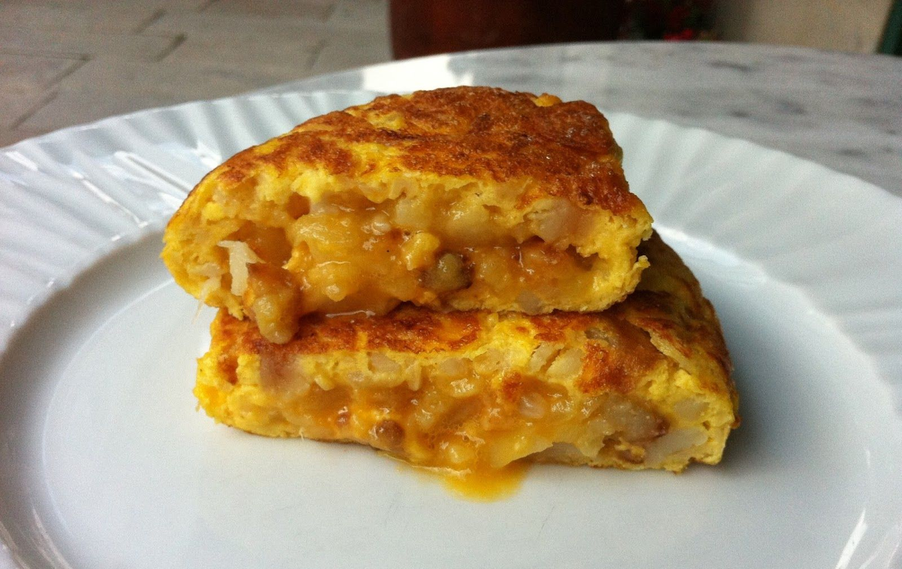

tortillas
como hacer tortilla poca hecha
- Elegimos nuestra sartén más grande y antiadherente. La ponemos al fuego y añadimos un buen aceite de oliva virgen extra.
- No tengáis miedo en gastaros un poco de dinero en aceite, le va a dar ese punto de sabor que distingue vuestra tortilla de las demás,
podéis emplear muchas variedades: arbequina, picual, cornicabra, hojiblanca, royal… el que más os guste, pero de calidad.
- Introducimos las patatas cortadas y ya saladas y dejamos
que se cocinen durante aproximadamente veinte minutos a fuego bajo.
- El tema del grosor de las patatas también va a gustos. Hay quien prefiere cortarlas a trozos muy pequeños, en láminas muy finas que casi se rompan al freír y o más bien grandes.
- Mientras se están friendo las patatas, en el bol donde luego vamos a echar las patatas batimos los huevos, reservamos.
- Pelamos la cebolla y cortamos lo más fino posible.
- En otra sartén calentamos aceite de oliva y añadimos los trozos de cebolla.
- Pochamos hasta que tenga un color dorado, que tenga un punto de caramelización pero sin llegar a quemarse.
La cebolla se hará antes que las patatas, así que escurrimos y añadimos al bol con el huevo batido.
fin
